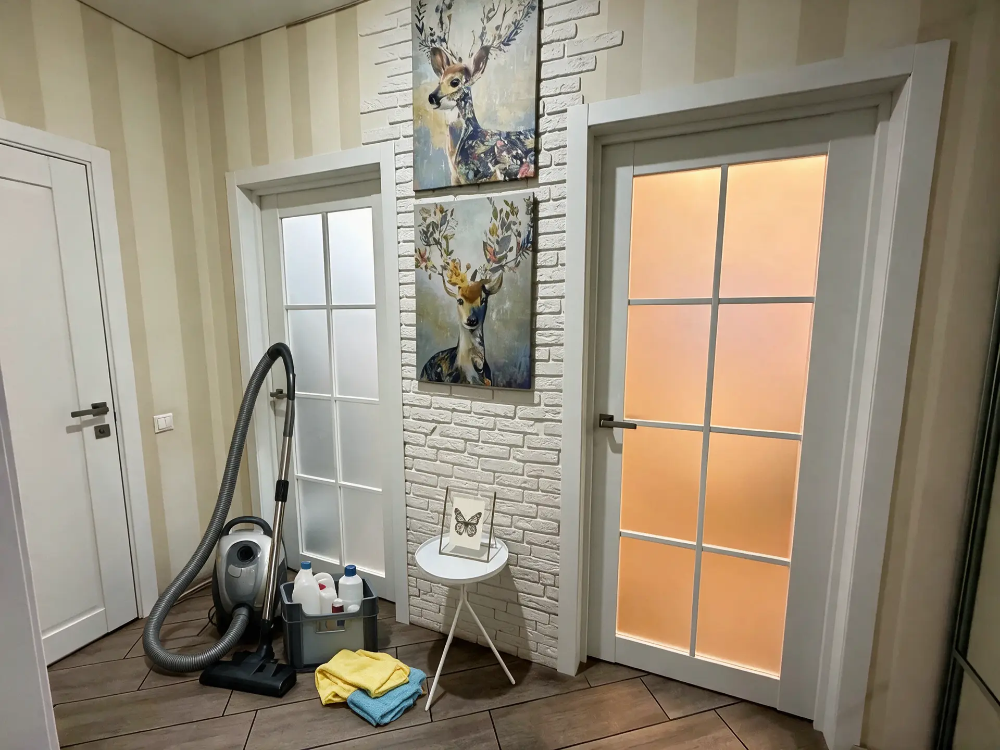
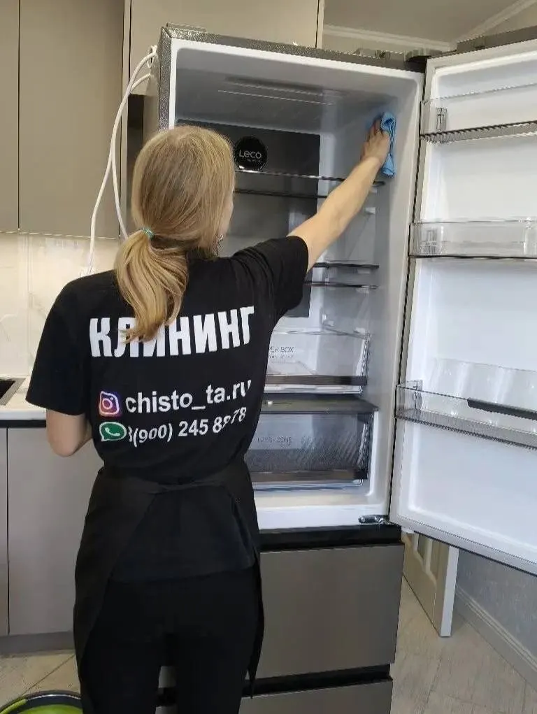
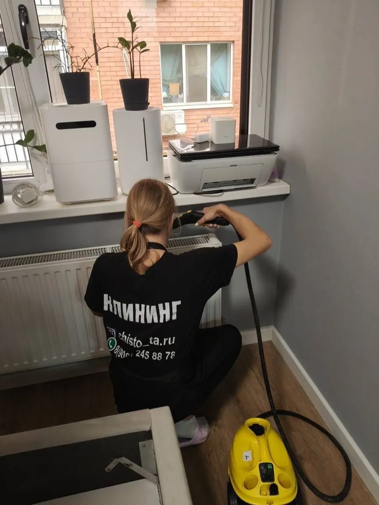
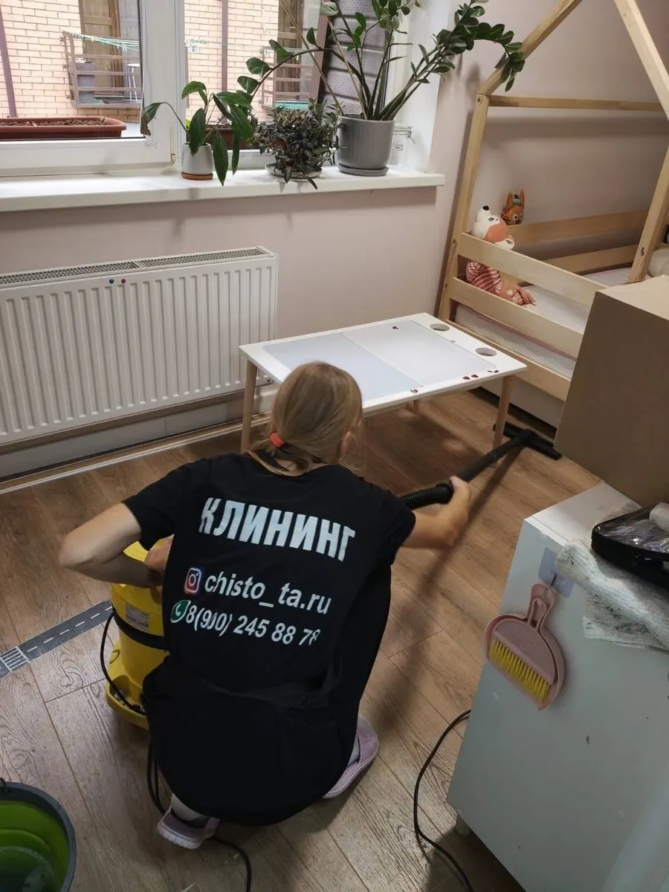

Клининг · Краснодар
Уборка квартир и домов в Краснодаре – к вашему часу
Поддерживающая, генеральная и после ремонта. Что входит – списком по комнатам. Назовите метраж – ответим суммой и датой.
- Цена – до приезда
- Приезжаем к своему времени
- Список «что входит» по комнатам

Что входит в уборку
Входит
- Везде: пылесос и мытьё полов, пыль с техники и мебели, зеркала, двери, радиаторы, выключатели и розетки
- Кухня: рабочие поверхности, фартук, гарнитур, плита, вытяжка, посуда в раковине (15 минут), вынос бытового мусора
- Ванная: ванна, кафель, раковина, дезинфекция унитаза, полировка сантехники
- Генеральная и после ремонта – всё по всей высоте, плюс стены, потолки, люстры, антресоли и гардины
- После ремонта: новая мебель и техника снаружи и внутри, новые ванна и душевая
Отдельно, если нужно
- Химчистка мебели – отдельная услуга, по запросу
Цены на уборку
Три вида уборки. Для какой площади цена поддерживающей и генеральной – назовём при расчёте, уборка после ремонта считается за м².
Виды уборки
- Поддерживающаяполы, пыль, кухня, ванная, вынос бытового мусора; пылесос – ваш3 490 ₽
- Генеральнаявсё то же по всей высоте, стены и потолки, люстры, антресоли, вытяжка; привозим всё необходимое5 990 ₽
- После ремонтастроительная пыль со стен, потолков, мебели, техники и сантехники200 ₽ за м²
Отказ от уборки менее чем за 18 часов до начала – неустойка 30% от стоимости уборки.
Как проходит
- 01
Заявка
Пишете метраж, вид уборки и адрес – отвечаем суммой и свободными датами.
- 02
Подтверждение
Согласуем дату и время приезда.
- 03
Уборка
Работаем по списку: кухня, ванная, комнаты – что входит, вы видели заранее.
- 04
Приёмка
Проходите по списку вместе с клинером. Отказ менее чем за 18 часов – неустойка 30%.



Что обещаем
Цена до приезда
Называем сумму при расчёте, а не «зависит от площади».
Приезжаем к своему времени
Дату и время согласуем заранее.
Список вместо «всё помоем»
Что входит в уборку – по комнатам, пункт за пунктом.
Отзывы с Яндекс.Карт
«Отличная компания. при заказе уточнял цену в нескольких компаниях, здесь оказалась самая приемлемая и самое главное она не изменилась по окончанию. Всем рекомендую»
Владимир Быков · 19 февраля
«Заказываю уборку стабильно раз в месяц . Всегда качественно , быстро и без каких-либо проблем . Так же заказываю химчистку мебели . Тоже отлично . Цена , качество супер»
Иван А. · 5 марта
«Лучший клининг в городе. Быстро и чисто, без проблем. Девочки профессионалы уборки. Рекомендую.»
Юлия Трегубова · 23 февраля
Отзывы с карточки на Яндекс.Картах, без правок.
Частые вопросы
Что входит в поддерживающую и в генеральную?
Поддерживающая – полы, пыль на доступной высоте, кухня и ванная. Генеральная – то же по всей высоте, плюс стены, потолки, люстры, антресоли, вытяжка. Полный список – выше.
Нужен ли мой пылесос?
Для поддерживающей уборки пылесос предоставляет клиент. Для генеральной привозим всё необходимое. Для уборки после ремонта уточним при заявке.
Как считается уборка после ремонта?
200 ₽ за м². Назовите площадь – посчитаем сумму.
Что если придётся отказаться?
Если отказ менее чем за 18 часов до начала уборки – неустойка 30% от её стоимости. Раньше – без неё.
Назовите метраж – вернёмся с ценой и датой
- Адрес
- Краснодар, ул. Кропоткина, 50, 3 этаж (офис)
- Часы
- до 22:00
- Телефон
- +7 (900) 245-88-78